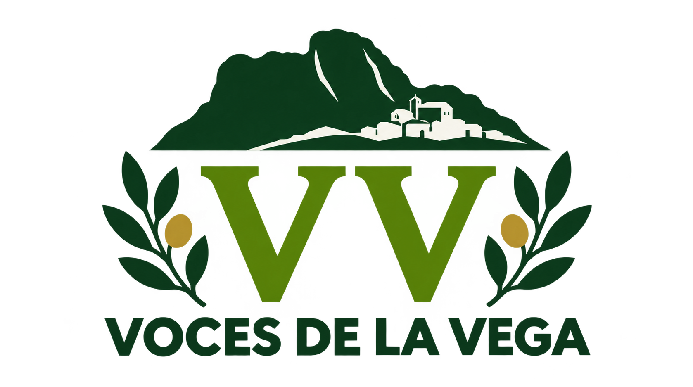

01 / TECNOLOGÍA
Tecnología con sentido.
Promover un uso responsable y útil de los dispositivos electrónicos en el centro.
Innovación responsable
CANDIDATURA ESTUDIANTIL · IES LAS VIÑAS
Somos Voces de la Vega, un equipo de estudiantes con ideas, propuestas y ganas de mejorar nuestro centro. Queremos escucharte y construirlo contigo.
NUESTRA CANDIDATURA
Creemos que cada estudiante tiene algo que aportar. Por eso queremos ser un puente entre el alumnado y el centro: escuchar, representar y convertir las buenas ideas en mejoras reales.
LAS PERSONAS DETRÁS DE LAS IDEAS
Seis estudiantes, distintas responsabilidades y un mismo objetivo: representar todas las voces.
IDEAS PARA AVANZAR
Estas son algunas de las áreas en las que queremos trabajar por un instituto más participativo.
Promover un uso responsable y útil de los dispositivos electrónicos en el centro.
Innovación responsableFomentar hábitos saludables y el bienestar de todo el alumnado.
Salud y convivenciaCuidar los espacios comunes y reducir los residuos.
Un centro más sostenibleEscuchar las necesidades del alumnado y proponer mejoras para aprender mejor.
Tu opinión importaConstruir un centro respetuoso, inclusivo y libre de discriminación, impulsando actividades deportivas para todos.
Respeto e inclusión